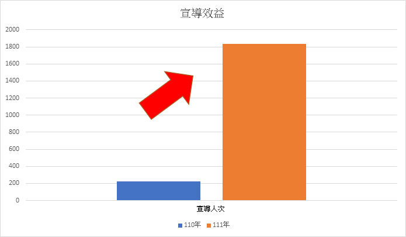
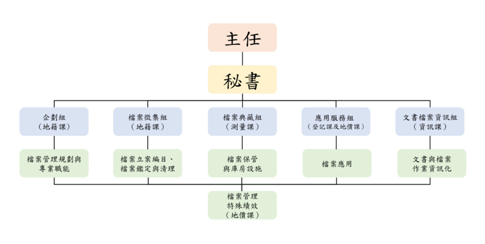

四、行銷宣導效益評估
110 年 7 月至 111 年 6 月間效益如下：
(一)外部分析
推動成效，指外部民眾反應，質化或量化分析資料
- 110 年 7 月至 111 年 6 月間，共宣導 1833 人次。
- 經問卷結果顯示，民眾對於本所地政專車宣導檔案應用滿意度高達 4.67。
- 母親節愛心義賣活動結合檔案應用推廣宣導，經問卷結果顯示，民眾滿意度高達 4.83。

四、行銷宣導效益評估
(二)內部分析
內部人力投入情形、人力調整情形。
成立「新北市新店地政事務所檔案管理推動小組」，共計 12 人。
